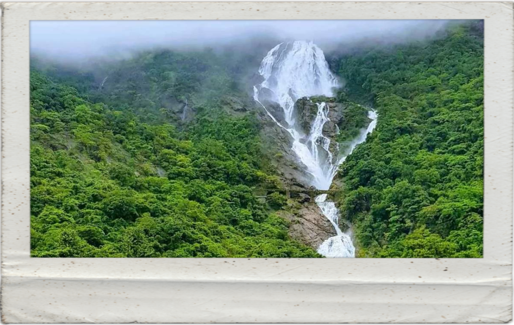
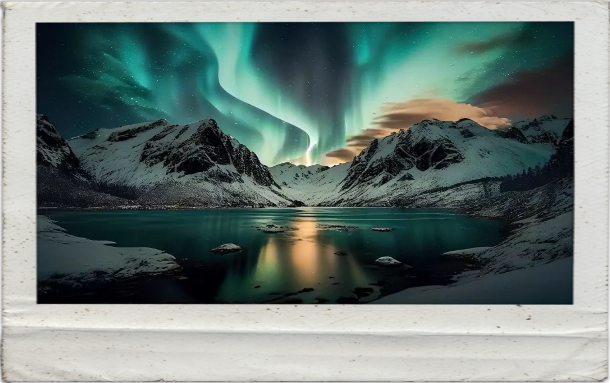
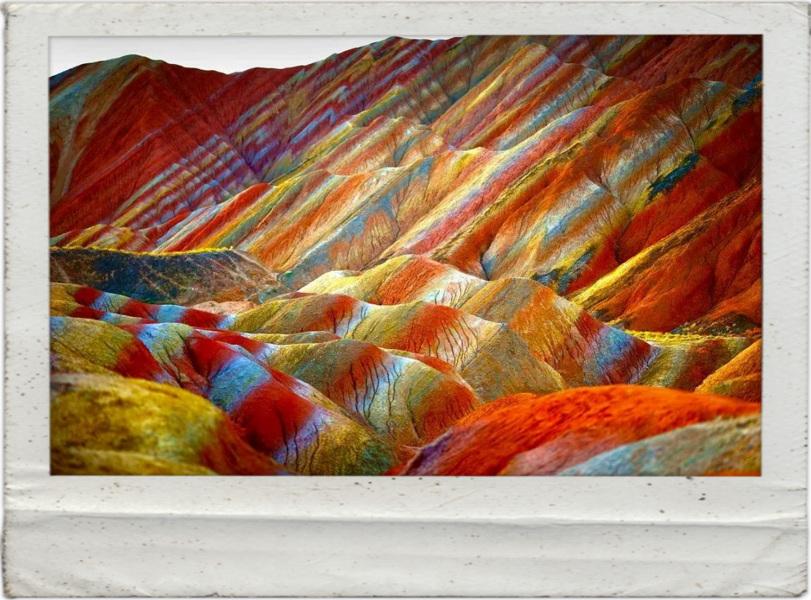

Dudhsagar Falls, India
Capture the majestic beauty of Dudhsagar Falls, one of India's most captivating natural wonders, for your photography
portfolio. Located in the verdant forests of Goa, this stunning cascade plunges from a height of over 300 meters,
creating a mesmerizing spectacle of cascading white water against the lush greenery. The name "Dudhsagar" translates to
"Sea of Milk," aptly describing the milky-white appearance of the water as it gushes down the rocky cliffs. Whether
you're drawn to the ethereal mist rising from the falls or the vibrant flora and fauna surrounding it, Dudhsagar offers
endless opportunities for breathtaking shots. From close-up details to sweeping panoramic views, this iconic waterfall
provides photographers with an abundance of inspiration.

Northern lights
Experience the awe-inspiring beauty of the Northern Lights and capture nature's most dazzling light show through your
lens. Also known as the Aurora Borealis, this natural phenomenon occurs when charged particles from the sun collide with
Earth's atmosphere, creating mesmerizing displays of colorful lights dancing across the night sky. The Arctic regions,
including countries like Iceland, Norway, Sweden, and Finland, offer some of the best vantage points to witness and
photograph this breathtaking spectacle. From vibrant greens and blues to shades of pink and purple, the Northern Lights
paint the heavens with a palette of otherworldly hues, providing photographers with endless creative possibilities.
Whether you're a seasoned professional or an amateur enthusiast, photographing the Northern Lights is an experience like
no other, promising unforgettable images that will mesmerize viewers for years to come.

Zhangye Danxia landform, China
Embark on a photographic journey to Zhangye Danxia Landform Geological Park in China, where nature showcases its
artistic prowess in vivid hues and surreal landscapes. Known as the "Rainbow Mountains," this geological wonder is a
masterpiece of vibrant colors, intricate patterns, and towering rock formations sculpted over millions of years by the
forces of wind and water. The surreal palette of reds, oranges, yellows, and greens creates a surreal dreamscape,
offering photographers a canvas unlike any other on Earth. Whether capturing the first light of dawn illuminating the
rocky peaks or the warm glow of sunset casting long shadows over the undulating terrain, Zhangye Danxia promises an
endless array of breathtaking compositions. With every twist and turn of the land, there's a new perspective waiting to
be discovered, making it a paradise for photographers seeking to capture the mesmerizing beauty of nature's palette.